Nome da aplicação: OffLink
Público-alvo: Qualquer pessoa que pretenda realizar chamadas de voz em grupo na mesma rede WiFi
Data de criação: 9 de março de 2026
Última atualização: 11 de abril de 2026
O OffLink é uma aplicação que permite realizar chamadas de voz em grupo sem ligação à Internet, dentro da mesma rede WiFi ou partilha de ligação. Através de comunicação P2P via WebRTC, oferece chamadas de voz com latência mínima.
Exemplos de utilização:
Ecrã inicial após abrir a aplicação. Comece a utilizar os três botões na parte inferior.
O OffLink funciona em modo WiFi LAN. Todos os participantes devem estar ligados à mesma rede WiFi. O dispositivo anfitrião inicia um servidor de sinalização e as chamadas de voz são realizadas entre os dispositivos da mesma rede.
Ponto-chave: Não é necessária ligação à Internet.
| Função | Dispositivos compatíveis | Descrição |
|---|---|---|
| Anfitrião | Android / iPhone | Dispositivo que inicia o servidor de sinalização e gere a chamada |
| Convidado | Android / iPhone | Dispositivo que se junta à chamada criada pelo anfitrião |
Nota: Todos os participantes devem estar ligados à mesma rede WiFi.
| Permissão | Utilização | Impacto em caso de recusa |
|---|---|---|
| Microfone | Chamadas de voz | Impossível realizar chamadas |
| Câmara | Leitura de código QR | Impossível registar grupo por QR |
| Dispositivos próximos (WiFi) ※Android | Deteção de rede WiFi | Impossível detetar o anfitrião |
| Localização ※Android | Pesquisa WiFi (requisito do sistema) | Impossível obter o SSID do WiFi |
| Bluetooth ※Android | Ligação a auriculares | Impossível utilizar auriculares |
| Notificações ※Android | Notificações de convite de chamada | Sem notificações em segundo plano |
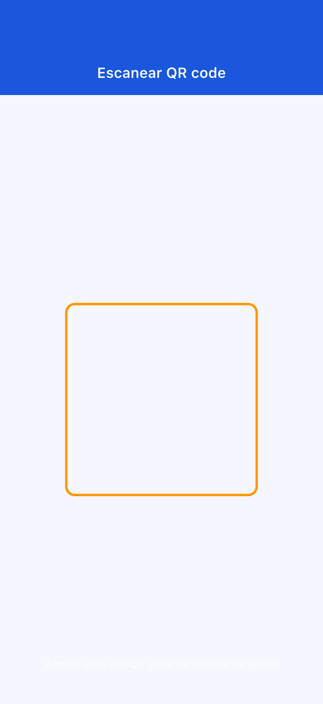
Se recusou uma permissão por engano: aceda a «Definições» → «Aplicações» → «OffLink» para alterar as permissões.
Inicie uma chamada instantaneamente sem necessidade de criar um grupo previamente.
Passo 1: Todos os participantes ligam-se ao mesmo WiFi
Passo 2: Toque em «Chamada imediata» (botão verde)
Passo 3: Introduza o seu nome de utilizador

Passo 4: Selecione um nível e inicie a chamada (→ 3-5. Sistema de pontos)
Passo 5: É enviado automaticamente um convite aos membros na mesma rede WiFi
Se já existir um anfitrião, pode optar por se juntar ou iniciar uma nova chamada.
Passo 1: Toque em «Criar como anfitrião» (botão azul)
Passo 2: Introduza o nome do grupo e uma palavra-passe (opcional) e toque em «Criar»
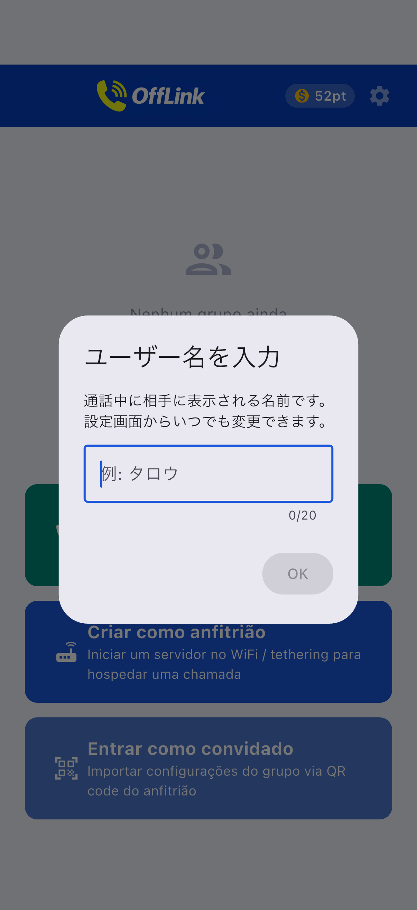
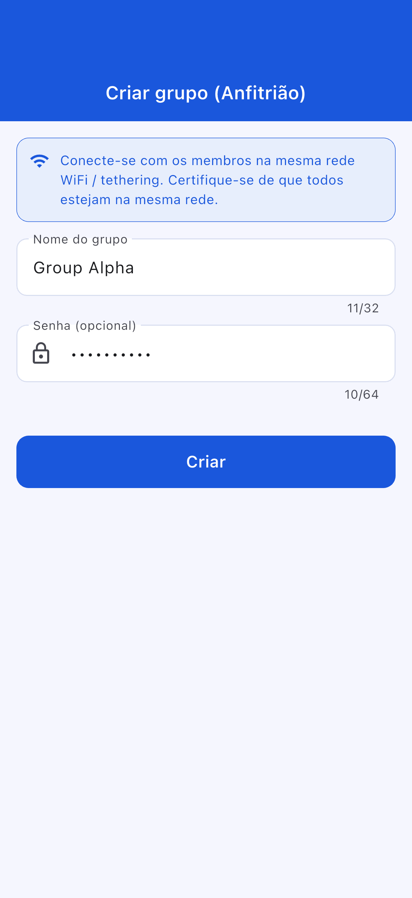
Dica: Escolha um nome de grupo fácil de identificar. Recomenda-se definir uma palavra-passe.
Passo 3: Selecione a ação de criação
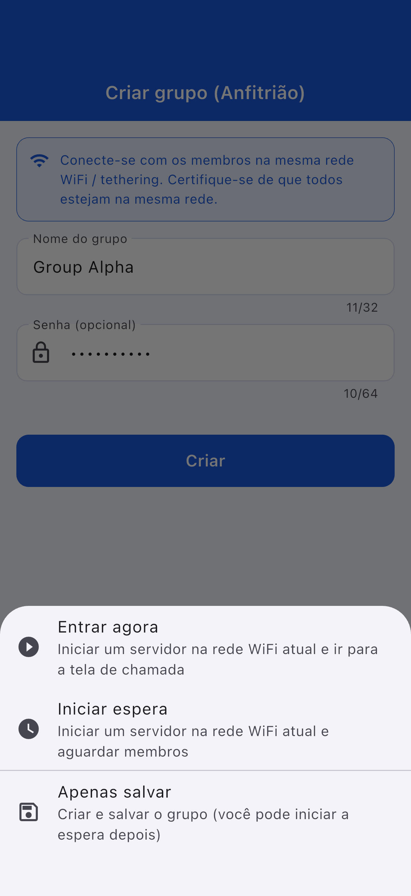
| Ação | Descrição |
|---|---|
| Juntar-se agora | Inicia o servidor e acede ao ecrã de chamada |
| Iniciar em espera | Inicia o servidor e fica em espera |
| Apenas guardar | Pode ser iniciado mais tarde |
Passo 1: Toque em «Juntar-se como convidado» (botão azul-claro)
Passo 2: Escolha o método de adesão
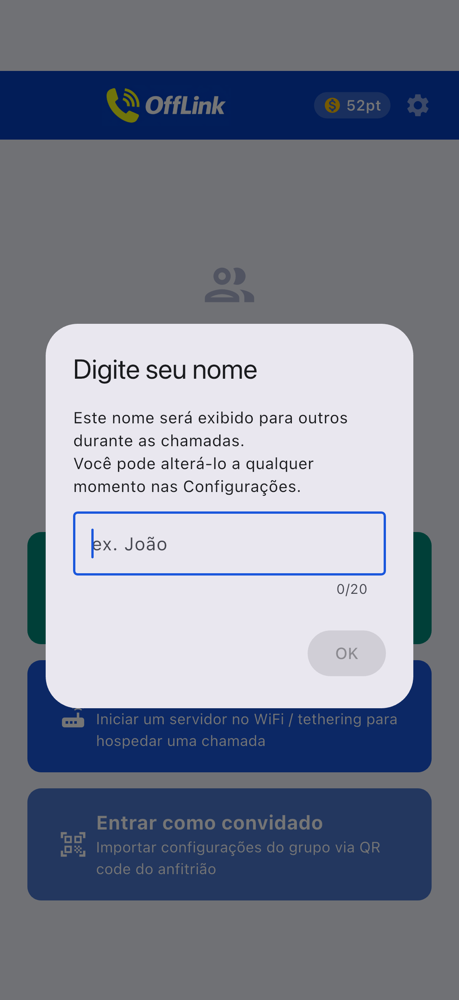
| Método | Ação |
|---|---|
| 📱 Ler código QR | Leia o código QR do anfitrião |
| 📋 Colar código | Cole o código partilhado |
| ✏️ Introdução manual | Introduza a informação diretamente |
Partilha do código QR (lado do anfitrião):

Colar código (lado do convidado):
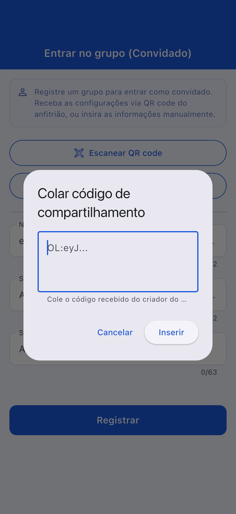
Passo 3: Depois de preenchida a informação, toque em «Registar»
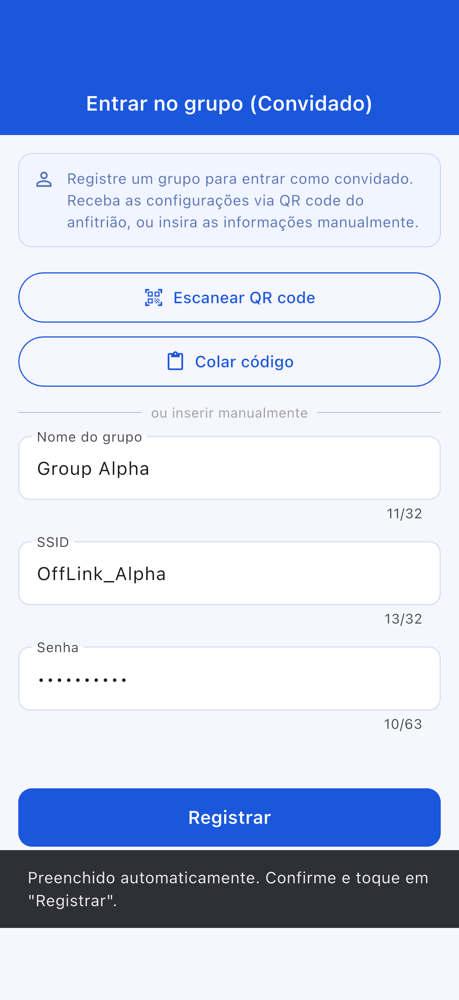
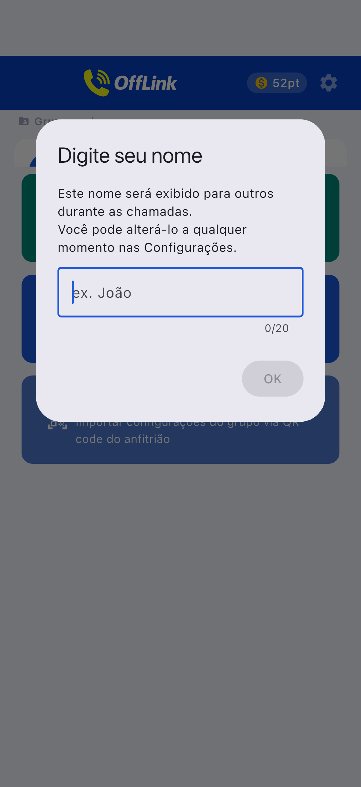
Ecrã de adesão como convidado:
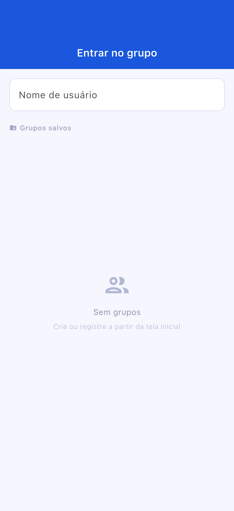
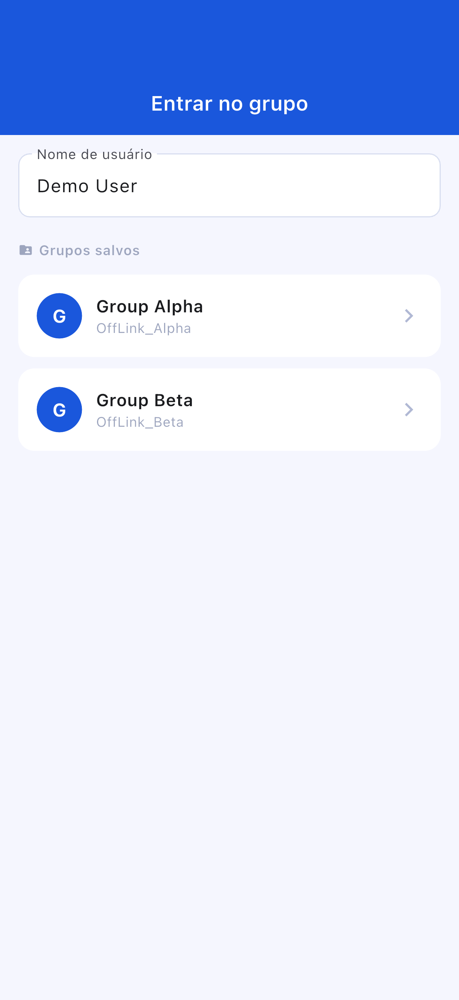
Ecrã de espera:
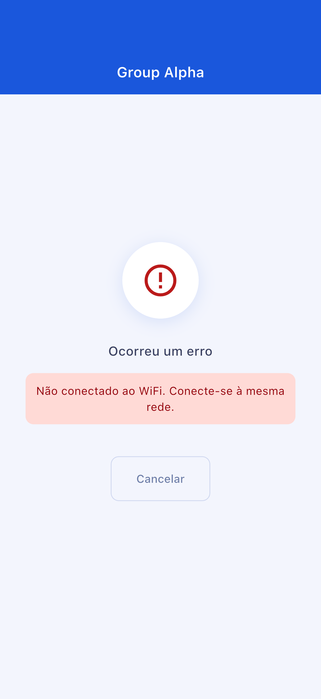
Ecrã de chamada:
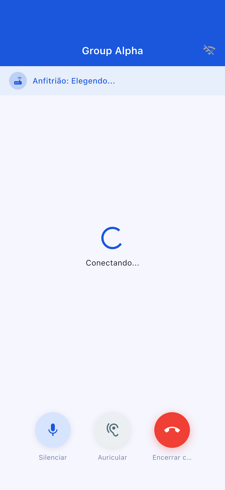
| Botão | Função |
|---|---|
| 🎤 Silenciar | Ativar/desativar o microfone |
| 🔊 Alternar saída de áudio | Altifalante / Bluetooth / Auricular |
| 🔴 Terminar chamada | Sair da chamada |
| Nível | Pontos consumidos | Participantes máximos |
|---|---|---|
| Standard | 10 pt | 4 pessoas |
| Large | 20 pt | 10 pessoas |
O OffLink não possui função de arranque automático do ponto de acesso. Ative manualmente a partilha de ligação.
Aceda a «Definições» → «Aplicações» → «OffLink» → «Permissões» para alterar
| Elemento | Limitação |
|---|---|
| Número máximo de participantes | Standard: 4 / Large: 10 |
| Modo de comunicação | Apenas WiFi LAN |
| Segundo plano | Limitado conforme o modelo do dispositivo |
| Limite de grupos guardados | Free: 5 / Premium: ilimitado |
| Elemento | Recomendação |
|---|---|
| Android | 5.0+ (API 21+) |
| iOS | 13.0+ |
| Bateria | Recomendado 80 % ou mais |
| Armazenamento | 100 MB ou mais |
| WiFi | Router / Partilha de ligação / WiFi portátil, etc. |